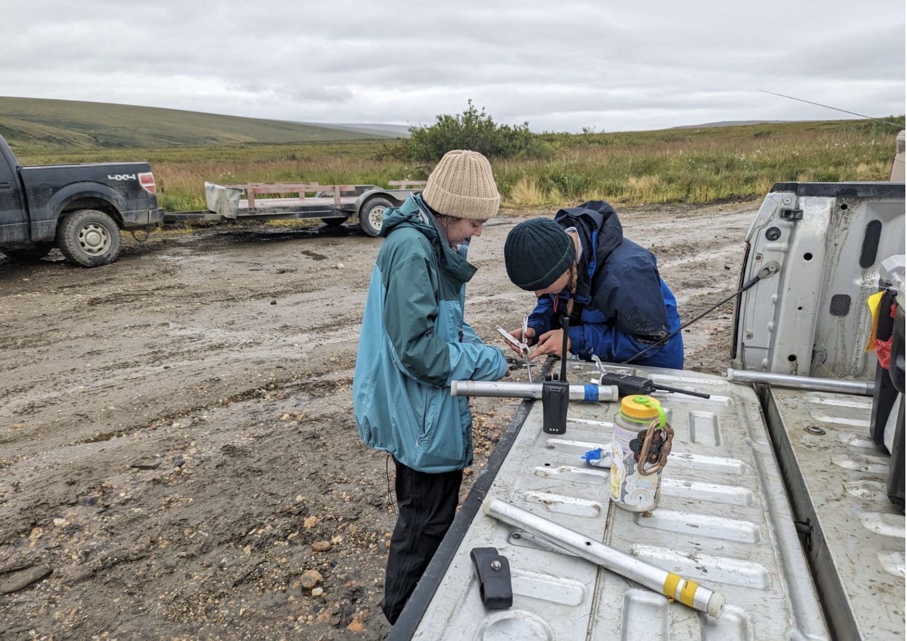
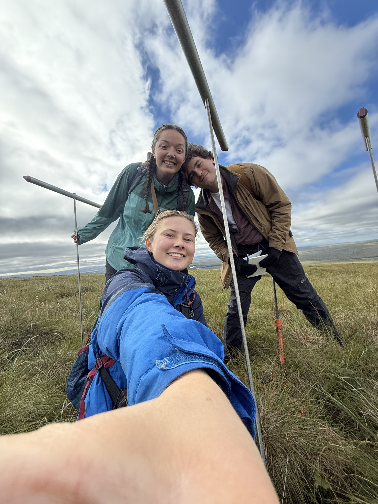
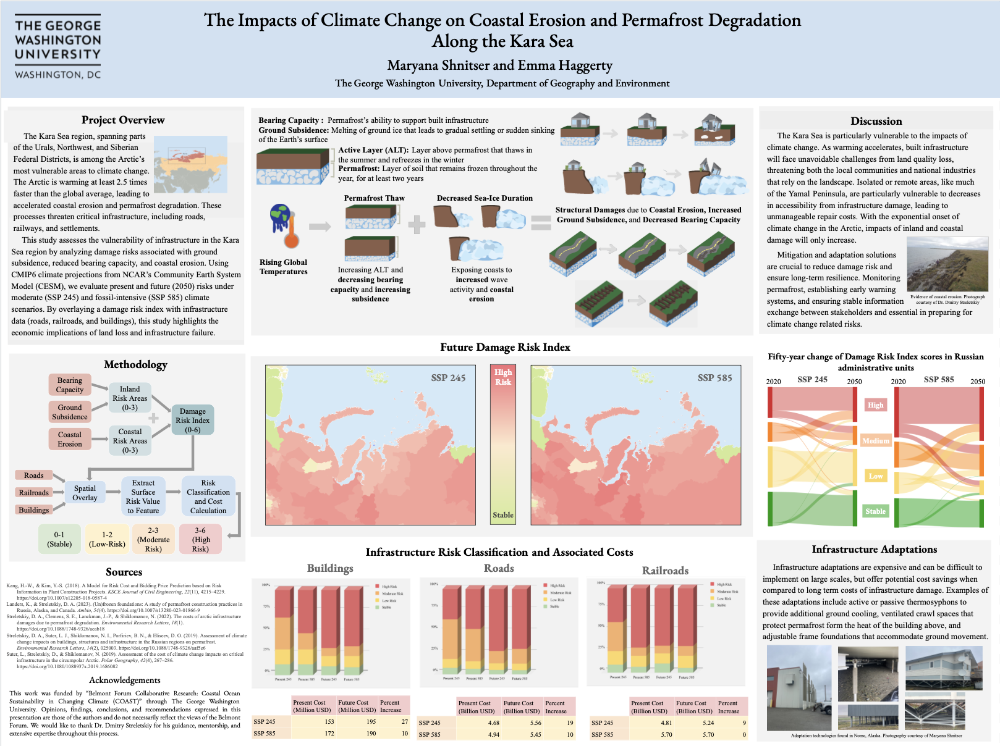

Research & Publications
Circumpolar Active Layer Monitoring (CALM) Program
Collected field measurements of permafrost active layer thickness in Nome, Alaska, as part of a long-term climate monitoring program. These measurements contribute to an international database used by researchers to analyze trends in permafrost thaw, support climate modeling, and assess environmental changes in Arctic regions.


Coastal Ocean Sustainability in Changing Climate (COAST) Project
Conducted an economic evaluation of the impacts of climate change on Arctic infrastructure by integrating OpenStreetMap infrastructure data with Community Earth System Model (CESM) outputs under moderate (SSP245) and fossil-intensive (SSP585) scenarios from NCAR. This created a risk index to assess infrastructure vulnerability to climate-related hazards and estimated associated costs using a structured cost matrix.

The Economy of the North 2025 (ECONOR IV)
Alongside Dr. Dmitry Streletskiy, I co-authored Chapter 10: Cost of Permafrost Degradation, which reviews the economic impacts of permafrost thaw across Arctic states and examines adaptation strategies to mitigate associated risks. Compiled by Statistics Norway in collaboration with the Arctic Council's Sustainable Development Working Group.
Read ReportThe Impact of Metro Proximity on Residential Property Values and Population Clustering: A Spatial Analysis of Washington, D.C.
Published in GWU's undergraduate economics journal, this thesis combines economic theory with spatial analysis to explore how access to public transit influences housing markets and urban population distribution in the D.C. metropolitan area.
Download Thesis